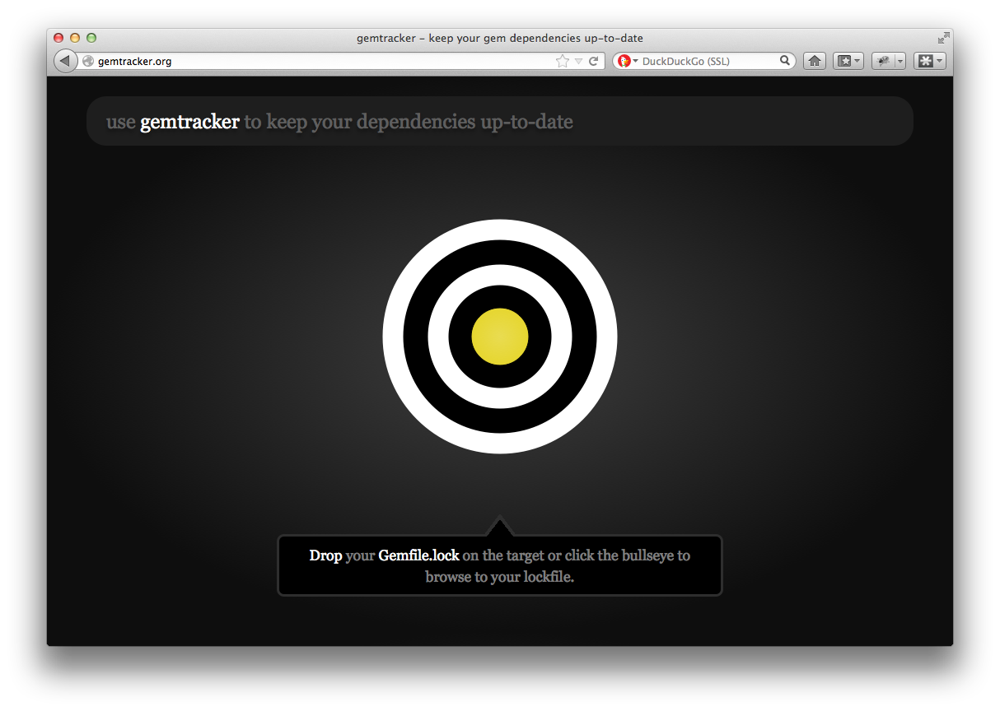
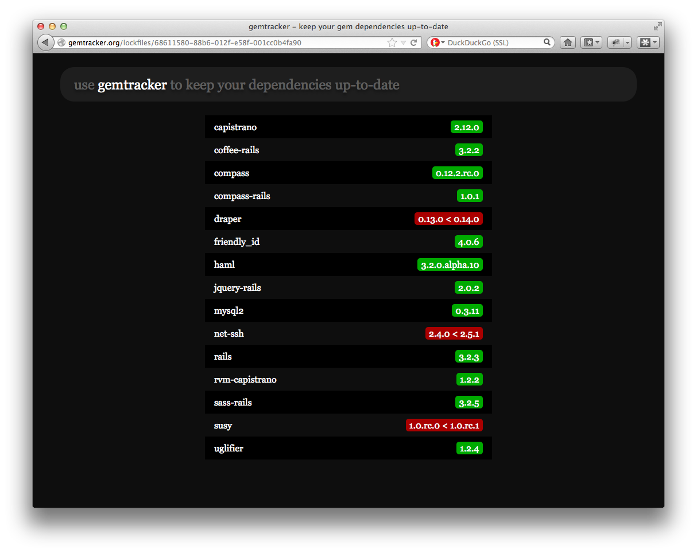

Keeping Your Gems Up-To-Date With Gemtracker
Figuring out if the gems you use in your Ruby project are outdated can be done by hand, but in a project with many dependencies this is a daunting task. To solve this problem I created gemtracker.org.

Using gemtracker is as simple as dropping your Gemfile.lock on the target on the homepage. Gemtracker will show you the dependencies from your Gemfile with the current version of each gem you are using. It will also show the latest version if a gem is outdated. Where do we get this information?

Rubygems Webhooks
A great feature of the rubygems.org API are ‘webhooks’. A webhook allows you to listen to events on rubygems.org, either for a specific gem or for all gems. Whenever a new version of a gem is released, rubygems.org will push a JSON message to gemtracker.org. This works great and saves us the need from periodically importing the latest gem information or having to scrape rubygems.org itself.
Awesome Vector Graphics With Raphaël
The animated ‘target’ on the homepage is a vector graphic created with Raphaël. Raphaël is a great JavaScript library that takes away a lot of the pain involved in creating useful vector graphics on the web.